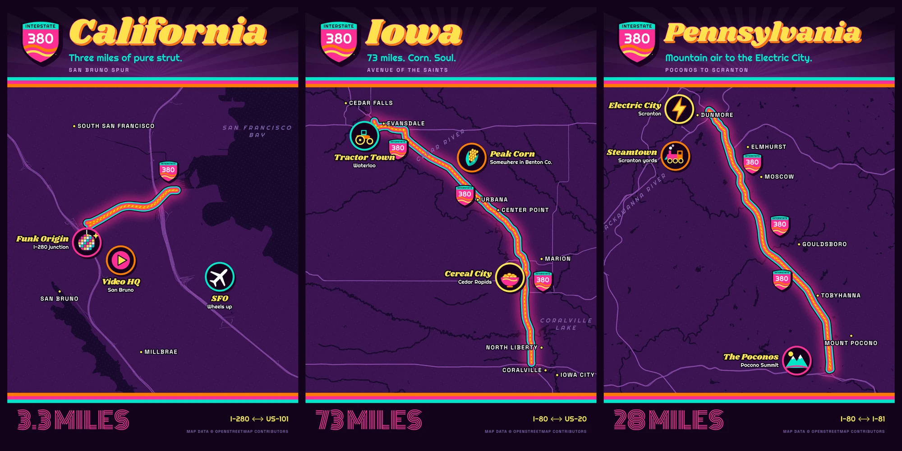

Here’s my 10 minute map of I-380, the funkiest interstate in America, which I drive at least once a week. My best time from home to Costco is seven minutes, mostly spent covering its entire length: all three miles of it. I only recently learned there are two other I-380s, so I made a triptych.
Select the map to open it at full size. Map data © OpenStreetMap contributors.